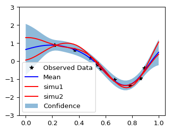

import math
import torch
import gpytorch
from matplotlib import pyplot as pltInstructions pour le dépot sur le site web
Ceci est une version reprise de ce tutoriel pour faire une régression par processus gaussien avec GPyTorch.
Nous commençons par créer des données simulées sur lesquelles on va apprendre la fonction de regression :
\[\begin{split}\begin{align} y &= \sin(2\pi x) + \epsilon \\ \epsilon &\sim \mathcal{N}(0, 0.04) \end{align}\end{split}\]
# training data is 50 points uniformly sampled in [0,1]
train_x = torch.rand(10)
# True function is sin(2*pi*x) with Gaussian noise
train_y = torch.sin(train_x * (2 * math.pi)) + torch.randn(train_x.size()) * math.sqrt(0.04)Ensuite, nous définissons un peu comme un réseau de neurones la classe permettant d’avoir un processus gaussien et nous initialisons. Les choix faits ici sont de prendre une espérance constante (gpytorch.means.ConstantMean()) et un noyau de covariance gaussien gpytorch.kernels.RBFKernel(), la fonction gpytorch.kernels.ScaleKernel() sert à déclarer qu’il y a un paramètre de variance devant le noyau.
# We will use the simplest form of GP model, exact inference
class ExactGPModel(gpytorch.models.ExactGP):
def __init__(self, train_x, train_y, likelihood):
super(ExactGPModel, self).__init__(train_x, train_y, likelihood)
self.mean_module = gpytorch.means.ConstantMean()
self.covar_module = gpytorch.kernels.ScaleKernel(gpytorch.kernels.RBFKernel())
def forward(self, x):
mean_x = self.mean_module(x)
covar_x = self.covar_module(x)
return gpytorch.distributions.MultivariateNormal(mean_x, covar_x)
# initialize likelihood and model
likelihood = gpytorch.likelihoods.GaussianLikelihood()
model = ExactGPModel(train_x, train_y, likelihood)Les paramètres du modèle de processus gaussien sont inférés en cherchant à optimiser numériquement la vraisemblance. Ces paramètres estimés dans ce modèle sont :
- l'espérance constante du processus,
- la variance du noyau ,
- le paramètre de portée du noyau.# Find optimal model hyperparameters
model.train()
likelihood.train()
# Use the adam optimizer
optimizer = torch.optim.Adam(model.parameters(), lr=0.1) # Includes GaussianLikelihood parameters
# "Loss" for GPs - the marginal log likelihood
mll = gpytorch.mlls.ExactMarginalLogLikelihood(likelihood, model)
training_iter = 50
for i in range(training_iter):
# Zero gradients from previous iteration
optimizer.zero_grad()
# Output from model
output = model(train_x)
# Calc loss and backprop gradients
loss = -mll(output, train_y)
loss.backward()
if i % 10 ==0:
print('Iter %d/%d - Loss: %.3f lengthscale: %.3f noise: %.3f' % (
i + 1, training_iter, loss.item(),
model.covar_module.base_kernel.lengthscale.item(),
model.likelihood.noise.item()
))
optimizer.step()Iter 1/50 - Loss: 1.113 lengthscale: 0.693 noise: 0.693
Iter 11/50 - Loss: 0.801 lengthscale: 0.320 noise: 0.311
Iter 21/50 - Loss: 0.516 lengthscale: 0.257 noise: 0.122
Iter 31/50 - Loss: 0.304 lengthscale: 0.245 noise: 0.047
Iter 41/50 - Loss: 0.235 lengthscale: 0.254 noise: 0.022Les estimations sont accessibles ainsi (il est à noter que dans le modèle de vraisemblance proposé un bruit d’observation est inclus comme un bruit blanc gaussien homoscédastique) :
print(model)
print(model.likelihood.noise.item()) # paramètre de variance du bruit d'observation (ajouté par défaut)
print(model.covar_module.base_kernel.lengthscale) # paramètre de portée
print(model.covar_module.outputscale) # paramètre de variance du GP
print(model.mean_module.constant) # paramètre d'espérance inféréExactGPModel(
(likelihood): GaussianLikelihood(
(noise_covar): HomoskedasticNoise(
(raw_noise_constraint): GreaterThan(1.000E-04)
)
)
(mean_module): ConstantMean()
(covar_module): ScaleKernel(
(base_kernel): RBFKernel(
(raw_lengthscale_constraint): Positive()
)
(raw_outputscale_constraint): Positive()
)
)
0.016611721366643906
tensor([[0.1978]], grad_fn=<SoftplusBackward0>)
tensor(0.8779, grad_fn=<SoftplusBackward0>)
Parameter containing:
tensor(-0.2242, requires_grad=True)Nous allons à présent présenter des prédictions et des simulations conditionnelles :
# Get into evaluation (predictive posterior) mode
model.eval()
likelihood.eval()
# Test points are regularly spaced along [0,1]
# Make predictions by feeding model through likelihood
with torch.no_grad(), gpytorch.settings.fast_pred_var():
test_x = torch.linspace(0, 1, 51)
observed_pred = likelihood(model(test_x))
f_preds = model(test_x)
y_preds = likelihood(model(test_x))
f_mean = f_preds.mean
f_var = f_preds.variance
f_covar = f_preds.covariance_matrix
# do 10 conditional simulations
f_samples = f_preds.sample(sample_shape=torch.Size([10,]))
with torch.no_grad():
# Initialize plot
f, ax = plt.subplots(1, 1, figsize=(4, 3))
# Get upper and lower confidence bounds
lower, upper = observed_pred.confidence_region()
# Plot training data as black stars
ax.plot(train_x.numpy(), train_y.numpy(), 'k*')
# Plot predictive means as blue line
ax.plot(test_x.numpy(), observed_pred.mean.numpy(), 'b')
# Plot two conditional simulations in red
ax.plot(test_x.numpy(), f_samples[0,:].numpy(), 'r')
ax.plot(test_x.numpy(), f_samples[5,:].numpy(), 'r')
# Shade between the lower and upper confidence bounds
ax.fill_between(test_x.numpy(), lower.numpy(), upper.numpy(), alpha=0.5)
ax.set_ylim([-3, 3])
ax.legend(['Observed Data', 'Mean','simu1','simu2', 'Confidence'])/usr/local/lib/python3.12/dist-packages/linear_operator/utils/cholesky.py:40: NumericalWarning: A not p.d., added jitter of 1.0e-06 to the diagonal
warnings.warn(
À faire
Il serait intéressant de tester les performances de ce module pour faire la prédiction dans le cas où il y a un grand nombre de points d’apprentissage et en grande dimension.